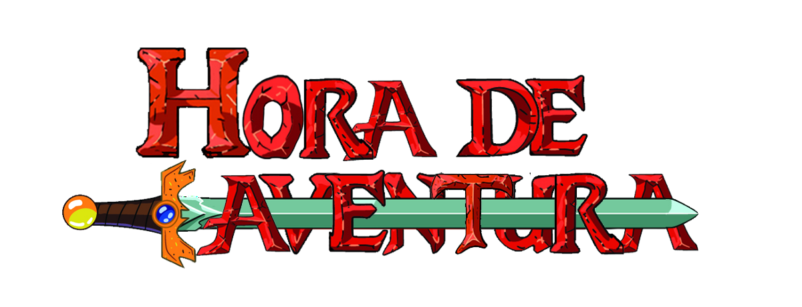
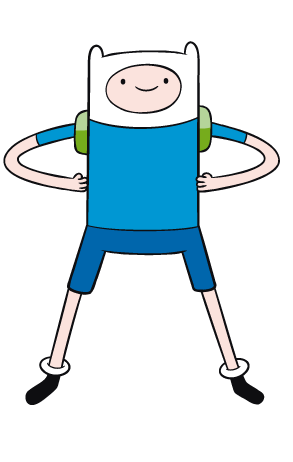

Hora de Aventura ou em inglês: Adventure Time é uma série de desenho animado americana criada por Pendleton
Ward para o Cartoon Network. A série segue as aventuras de Finn (dublado por Jeremy Shada), um garoto humano
aventureiro, e o seu melhor amigo e irmão adotivo Jake (dublado por John DiMaggio), um cão com poderes que
lhe permitem alterar a forma e tamanho conforme a sua vontade.
Finn Mertens

Finn Mertens, também conhecido como Finn the Human, é um personagem fictício e um dos dois protagonistas da
série animada de televisão americana Hora de Aventura criada por Pendleton Ward. Ele também apareceu na série
spin-off Adventure Time: Distant Lands. Ele é dublado por Jeremy Shada na maioria das aparições